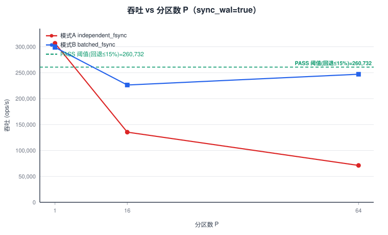
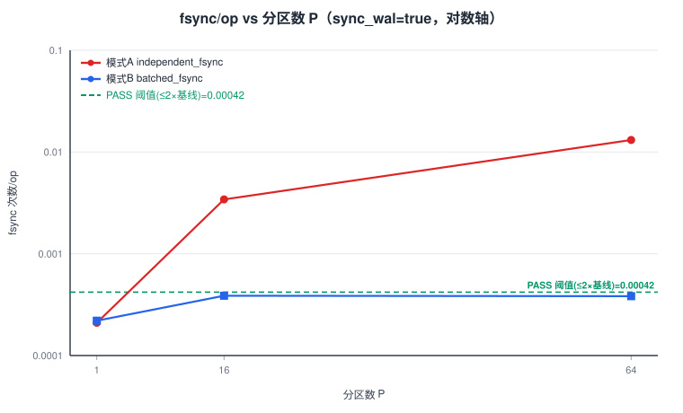
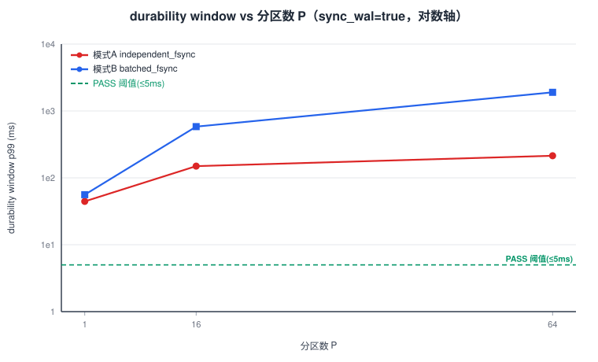
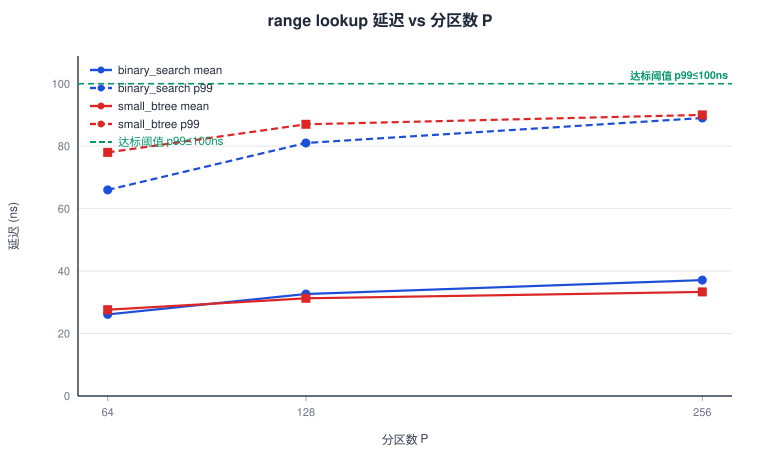

exp2_report.json本实验验证 ZeroFlush「WAL=L0 分区映射」的两个可疑开销点：(a) 每次 Put 的 range lookup 延迟；(b) 单 WAL 拆成 P 个分区 WAL 后 fsync / 组提交语义是否导致吞吐崩塌。机械决策规则要求 sync_wal=true 时模式 B(P=64) 相对单 WAL 基线吞吐回退 ≤15%、fsync/op ≤2×基线、且 durability window ≤5ms。
结果：range lookup 达标（p99 66–90 ns < 100 ns）；multi-WAL 不达标——基线 P=1 模式A ≈306,743 ops/s；P=64 模式A 回退 76.797%（fsync/op 0.013143）；P=64 模式B 回退 19.467%（>15%，fsync/op 0.000383 比值1.8238 达标但窗口 1902.0261 ms ≫5ms）。两模式均不满足 PASS → FAIL，触发 PPT 第 10 页设计修订。
p99 全部 ≤90 ns < 100 ns 阈值 → 风险点 (a) 达标。
| P | impl | mean_ns | p99_ns | 判定 |
|---|---|---|---|---|
| 64 | binary_search | 26.123 | 66.0 | ≤100ns |
| 64 | small_btree | 27.642 | 78.0 | ≤100ns |
| 128 | binary_search | 32.673 | 81.0 | ≤100ns |
| 128 | small_btree | 31.274 | 87.0 | ≤100ns |
| 256 | binary_search | 37.121 | 89.0 | ≤100ns |
| 256 | small_btree | 33.335 | 90.0 | ≤100ns |
模式 A=independent_fsync（每 dirty 文件各自 fsync，commit 批=512）；模式 B=batched_fsync（统一批量 fsync，commit 批=512×P）。key 分布 uniform over 2^24（worst-case dirty 扇出）。
| P | mode | sync | throughput (ops/s) | fsync/op | durability p99 (ms) | 判定关键 |
|---|---|---|---|---|---|---|
| 1 | A independent | true | 306,743.0 | 0.00021 | 44.5179 | 基线 |
| 1 | A independent | false | 2,185,463.8 | 0.0 | 4.9355 | nosync |
| 1 | B batched | true | 298,867.9 | 0.00022 | 55.9321 | |
| 1 | B batched | false | 2,099,587.5 | 0.0 | 5.9725 | nosync |
| 16 | A independent | true | 135,256.5 | 0.003423 | 149.7172 | |
| 16 | A independent | false | 2,424,634.6 | 0.0 | 5.2446 | nosync |
| 16 | B batched | true | 226,244.5 | 0.000387 | 583.5687 | |
| 16 | B batched | false | 1,890,751.4 | 0.0 | 41.6155 | nosync |
| 64 | A independent | true | 71,174.0 | 0.013143 | 214.1229 | 回退 76.80% |
| 64 | A independent | false | 2,284,206.6 | 0.0 | 4.1969 | nosync |
| 64 | B batched | true | 247,030.7 | 0.000383 | 1902.0261 | 回退 19.47% |
| 64 | B batched | false | 1,816,119.1 | 0.0 | 289.1641 | nosync |
baseline_single_wal（P=1, 模式A）：sync=true 306,743.0 ops/s / fsync/op 0.00021；sync=false 2,185,463.8 ops/s / fsync/op 0.0。




<img> 渲染，结构等同 PNG。生成脚本：charts/gen_exp2_charts.py。基线 baseline = P=1, 模式A, sync=true：throughput 306,743.0 ops/s，fsync/op 0.00021。三道闸门须全部满足方为 PASS。
| 闸门 | 计算值 | 阈值 | 判定 |
|---|---|---|---|
| G1 吞吐回退 | (306743−247030.7)/306743×100 = 19.467% | ≤15% | FAIL |
| G2 fsync/op 比值 | 0.000383/0.00021 = 1.8238× | ≤2× | PASS |
| G3 durability | 1902.0261 ms | ≤5 ms | FAIL |
G1 不满足 ⇒ 既非 PASS 亦非 REDESIGN（需 G1∧G2 同时成立但 G3 不成立）。
| 闸门 | 计算值 | 阈值 | 判定 |
|---|---|---|---|
| G1 吞吐回退 | (306743−71174)/306743×100 = 76.797% | ≤15% | FAIL |
| G2 fsync/op 比值 | 0.013143/0.00021 = 62.59× | ≤2× | FAIL |
| G3 durability | 214.1229 ms | ≤5 ms | FAIL |
A、B 均不满足 PASS 条件 ⇒ decision = FAIL（与 exp2_report.json.decision 一致）。
exp_design/pre_experiment/report/exp2_report.json
聚合数据output/pre_exp/exp2/aggregated.json（含逐 rep 明细 + 极差）
判定输出output/pre_exp/exp2/decision.json
原始 JSONoutput/pre_exp/exp2/raw/（56 个）
运行日志output/pre_exp/exp2/logs/*.log
图表脚本exp_design/pre_experiment/report/charts/gen_exp2_charts.py
图表exp_design/pre_experiment/report/charts/exp2_*.svg
作废数据output/pre_exp/exp2/raw_polluted_0032/（被干扰，不展示）